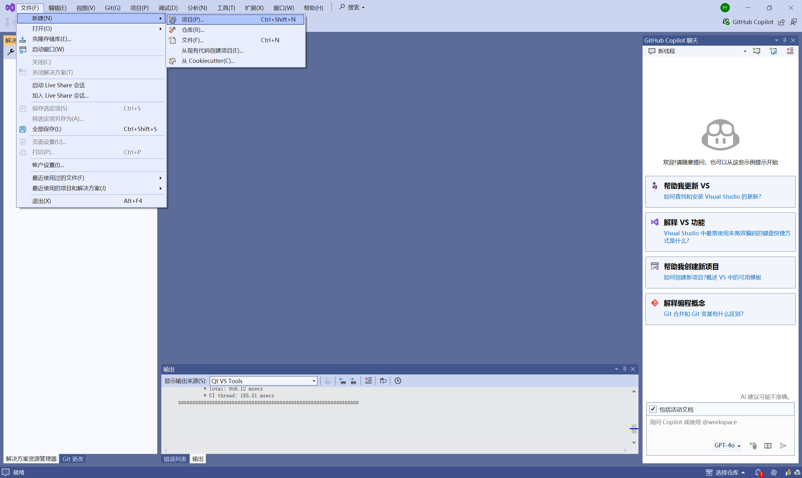
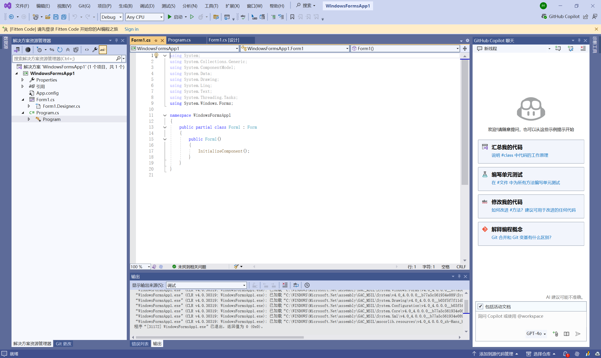

01-C Sharp应用程序界面开发
文章主要参考CSDN DXB2021的文章《C#应用程序界面开发基础——窗体控制（1）——Form窗体（删除事件部分，没看懂）》^[https://blog.csdn.net/DXB2021/article/details/125558570]
项目的创建
打开Visual Studio（以Visual Studio 2022为例）
依次点击文件>新建>项目
使用快捷键Ctrl+Shift+N可以快速地打开“新建项目”对话框

在拉下菜单中选择C#、Windows、桌面中，在列表框选择Windows窗体应用（.NET Framework），点击下一步。
PS：VS下的Windows 窗体应用(.NET Framework)与Windows 窗体应用之间的区别可以参考下面的网站
- VS下的 Windows 窗体应用(.NET Framework) 与 Windows 窗体应用之间的区别_vs 窗体应用和窗体应用库选哪个-CSDN博客
- (求教windows窗体应用和windows窗体应用(.net framework)的区别? - 知乎
设置完毕后点击创建。
进入界面
窗体初始代码
在解决方案资源管理器，双击Program.cs文件，会跳转到Windows控制台应用界面，在“编辑”窗口中是一段自动生成的WinForm程序。
代码如下：
1 | |
再单击“启动”按键，会弹出一个空白的窗体。
右击“窗体”后，选择“查看代码”命令，就会跳转到Form1.cs文件

代码如下：
1 | |
窗体的添加与删除
添加窗体
右击项目名称WindowsFormsApp1，在弹出的快捷菜单中选择“添加”-“Windows窗体”或者“添加”-“新建项”命令
最后在“添加新项”框中选择“窗体（Windows窗体）”
添加窗体成功
删除窗体
删除窗体，只需要在解决方案管理器中，选中要删除的窗体名称，右击，在弹出的快捷菜单选择“删除”命令即可
窗体的属性
1-“属性”面板
打开“属性”面板有三种方法：
01-右键命令
02-“视图”命令
依次点击视图>属性窗口
03-快捷键
同时按下Alt+Enter
2-C# WinForm窗体基础属性
01-窗口样式中的属性值
| 属性值 | 说明 |
|---|---|
| Icon | 更改图标样式（左上角图标） |
| MaximizeBox:true; | 显示右上角最大化按钮 |
| MinimizeBox:true; | 显示右上角最小化按钮 |
| ShowInco:true; | 显示左上角小图标 |
| ShowInTaskbar:ture; | 窗体显示在任务栏 |
| TopMost:ture; | 窗口置顶显示 |
| Opacity:100% | 整个窗口透明度 |
02-布局中的属性值
| 属性值 | 说明 |
|---|---|
| AutoScroll:true/false; | 如果控件超出窗口是否自动显示滚动条 |
| AutoSize:true/false; | 窗口的范围是否会超出控件的大小 |
| MaximumSize:0,0; | 窗口可以拖曳的最大的大小 |
| MinimumSize:0,0; | 窗口可以拖曳的最小的大小 |
| Size:300,300; | 窗口打开时默认的大小 |
| StartPosition:centerScreen; | 窗口打开时默认桌面位置，居中 |
| WindowState:Maximized; | 默认打开窗口最大化 |
03-外观的属性值
| 属性值 | 说明 |
|---|---|
| Font:宋体,9pt； | 可以修改字体大小，字体越大控件越大 |
| Text； | 输入文本 |
| TextAlign； | 文字位置 |
| FormBorderStyle:FixedSingle； | 窗口不可拖曳大小 |
| FormBorderStyle:None; | 隐藏窗口的边框 |
| DropDownStyle:DropDownList； | 窗让下拉框无法输入文本 |
3-设置窗体属性
窗体的图标是系统默认的图标
更改图标，在“属性”面板中，选择Icon性格
窗体的颜色和背景，通过BackgroundImage属性进行设置。选择“属性”面板中的BackgroundImage属性。
窗体的常用事件
所谓事件，就是指要发生的事情，可以简单地理解为用户的操作，它是由对象引发的。窗体的所有事件，都可以在“属性”面板中进行查看。
01-添加事件
为窗体添加一件事件，只要在事件面板里选择要添加的事件
以Load为例，在Load后面的空格里双击，相应的事件将会自动生成。

运行
02-删除事件
直接删除对应的代码即可
1 | |
03-窗体的显示与隐藏
窗体标识符.Show()
窗体标识符.Hide()